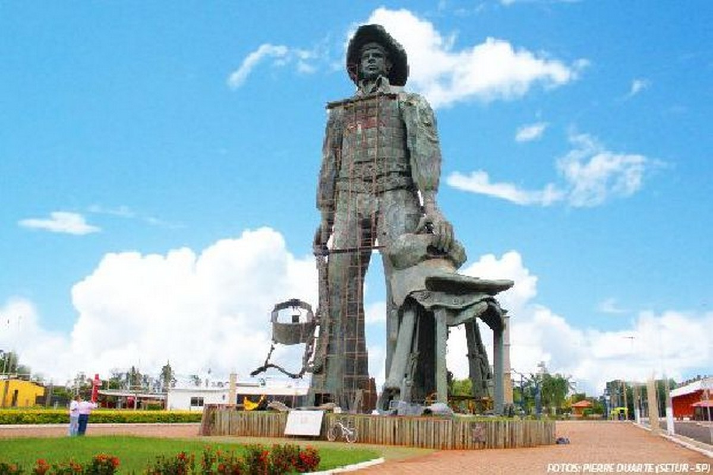
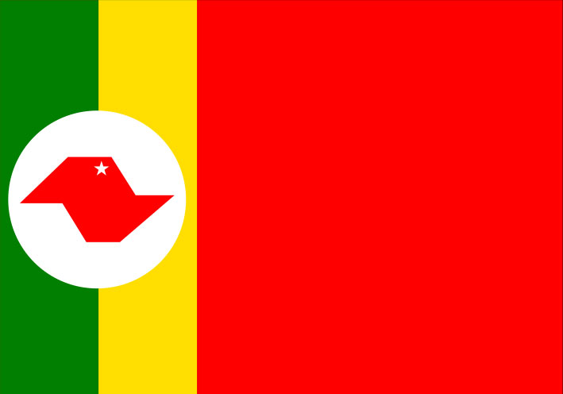
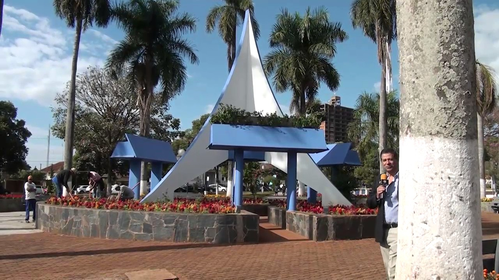
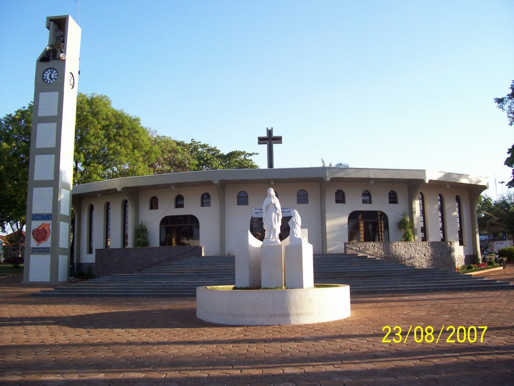
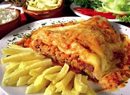

Onde eu nasci
Eu nasci, no dia 13/07/2007, em Barretos onde ocorre a famosa Festa do Peão. A Festa do Peão de Boiadeiro que acontece todos os anos, que além do rodeios acontecem, shows de música sertaneja e a queima do alho.


Pontos Turisticos de Viradouro


Onde eu estudo
Atualmente eu estudo na Etec (Escola Tecnica Estadual) de Bebedouro, onde aprendo muito com professores altamente capacitados.

Meus Hobbies
Eu gosto de jogar jogos digitar,ler mangá e assistir anime e ver gameplays.


Comida favorita
Bom eu como muita coisa, mas a minha favorita é a parmegiana.
Algumas fontes dizem que este prato surgiu durante a Revolução Socialista na Rússia, quando as famílias comiam o restante de carne que ainda tinham congelada e escondida no congelador e a camuflavam com queijo, para escondê-la dos ladrões, o que após derretido se tornava o bife à parmegiana que conhecemos hoje.
